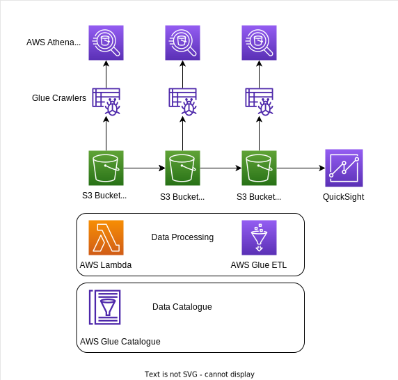

Youtube Data Analysis
🎞📊
Summary 🚀
This project is a complete end-to-end data engineering solution as it goes from exploring and cleaning raw data of Youtube trending videos to analyzing it on Quicksight. It includes the usage of relevant AWS services such as S3, Glue, Lambda, IAM and QuickSight.
Tech Design

Objectives 🎯
- Analyze raw structured data in different formats (json, csv) stored in a "raw" S3 bucket.
- Clean the data using different AWS services such as Lambda and Glue ETL. Store the clean data in parquet format in a new "cleansed" S3 bucket.
- Create a new analytics dataset in parquet format joining the cleansed datasets. Use Glue ETL for this process and store in a new "analytics" S3 bucket.
- Use Glue Crawlers and Data Catalog to infer the data schema and query the data at multiple stages (raw, cleansed, analytics) using Athena.
- Create a dashboard using QuickSight (BI tool) to analyze the data.